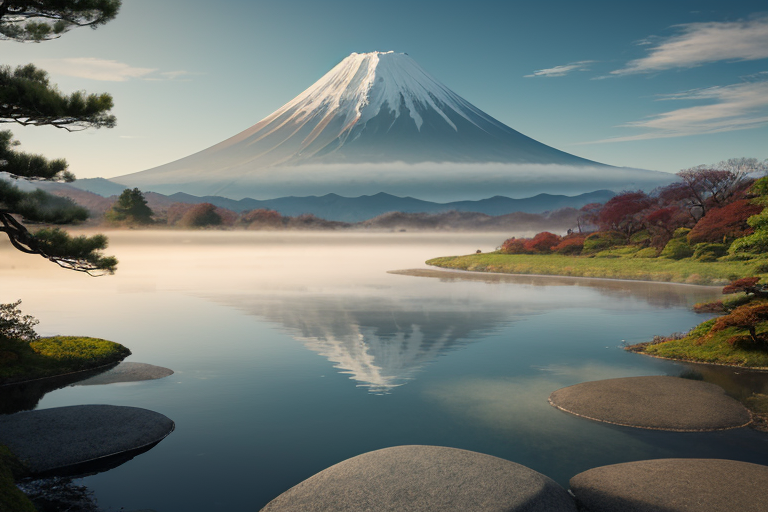
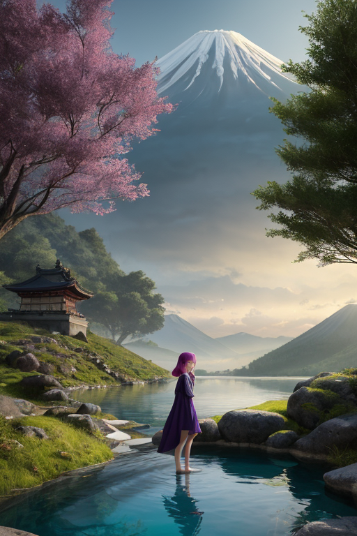
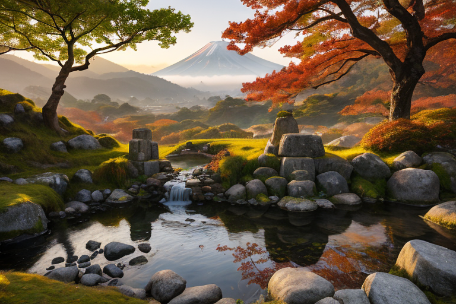
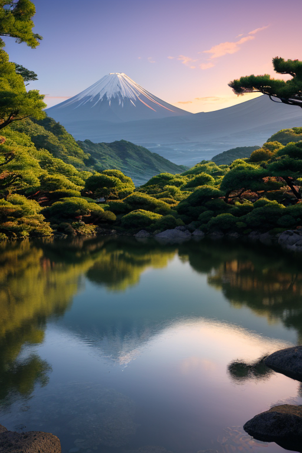
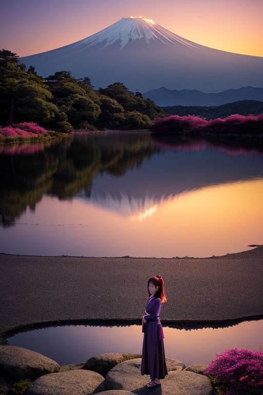

第一章 現実の山梨
あなたはまだ気づいていない。この土地にも、王がいることを。
富士五湖の水面は、朝靄に包まれて鏡のようだ。忍野八海の湧水池は、底まで透き通り、時が止まったかのような静けさを湛えている。昇仙峡の奇岩は、長い歳月の水流に削られ、神々しいまでの造形を見せている。ここには、常に祈りの空気が流れている。富士山への信仰が、この土地の隅々にまで浸透し、人々の営みを静かに包み込む。
その静寂の中心に、彼は立っていた。峰王、ヤマナリア・ルミナである。紫と金の紋章が、霊峰と果実の輪を描く。彼の目は、常に富士山の頂を、あるいはそれ以上の高みを見つめている。理想の頂点へ。完璧な調和へ。歪みを調整する王の役目は、彼にとって、より高く、より完全な状態へとこの地を導くための、不断の階段落ちだった。
しかし、彼はふと問う。この高みを目指す理由は、果たして何なのか。頂点に立つこと自体が目的なのか。それとも――。静かな水面に映る山影は、何も答えない。

第二章 歪みの兆候
昇仙峡の渓流は、翡翠色の深淵を静かに流れていた。その水音は、この地に満ちる祈りのエネルギーを運ぶリズムそのものだった。富士山への信仰、武田信玄が求めた天下への志、果樹園で実を育む農家の願い。それら無数の「高みへの想い」が、ヤマナリア・ルミナが調整する地殻の歪みと共鳴し、一種の精神的圧力となって地中に蓄積されていた。
「峰王様、御坂トンネル付近の歪み計測値に、特異な揺らぎを確認」
主席妖精ルミナラの報告は、いつもより緊迫していた。通常の地殻変動とは異なる、微細で複雑な波形。それは、人々の「高みを目指す」強い思いが、時に焦りや不安へと変質し、地脈の流れに乱れを生じさせている兆候だった。完璧な調和を目指す王の理想そのものが、新たな歪みの種となるという逆説。
富士五湖の水面は、曇り空を鈍く映していた。王は、自らの内側から湧き上がる同じ問いを感じた。この高みへの志向は、果たしてこの地を守る力なのか、それとも――。

第三章 王の葛藤
昇仙峡の渓流は、静寂に満ちていた。岩肌を伝う水音だけが、王の内なる問いを反響させる。高みを目指す理由は何か。理想の調和を追求するこの意志は、歪みを生む焦りと、どこで分かれるのか。
甲府城跡の石垣に手を触れる。武田信玄が夢見た「天下」という高みは、この土地に何を残したのか。領民を守るための戦いが、さらなる戦乱の種を蒔いた歴史の皮肉。王は目を閉じる。自らの理想もまた、完璧を求めるあまり、微細な乱れを無視してはいないか。富士山の神聖な静寂を保つために、時に、小さな揺れを許容しなければならない現実。
妖精ルミナラが、そっと肩に止まった。「峰王様、完璧な山はありません。ぶどうの樹だって、少し曲がった枝にこそ、甘い実がなります」
王は、深く息を吸った。清浄な空気が、胸の奥の硬い何かを溶かしていく。求めているのは、揺るぎない頂点ではない。絶えず成長し、時に躓き、それでも立ち上がる、この土地そのものの在り方なのかもしれない。

第四章 妖精との対話
富士五湖の一つ、西湖の畔で、王は静かに座っていた。水面は鏡のように富士を映し、完璧な逆さ富士を形作っている。しかし、その水面の下では、目に見えない微細な波が、絶えず生じては消えていた。
「峰王様が求める『高み』は、どこにあるとお思いですか」
ルミナラが、そっと問いかけた。その声は、湖畔を渡る風のように柔らかい。
王は答えることができなかった。かつては、星から与えられた使命の完遂、歪みの完全な制御こそが頂点だと思っていた。しかし、この地で感じる祈りは、それとは違う質のものだった。富士を仰ぐ登山者の、一歩一歩に込められた切実な願い。ぶどう畑で汗を流す農民の、収穫への静かな期待。それらは、頂上への到達そのものよりも、歩み続ける過程そのものに宿っているように思えた。
「この国の人々は、山に登り、神に祈ります」ルミナラが続けた。「でも、その祈りの多くは、何かを手に入れるためではなく、自分自身の内側にある揺れを静め、魂を整えるためではないでしょうか。高みを目指す理由……それは、外にある頂点に立つためではなく、内なる静寂を見出すための、長い長い道程そのものなのかもしれません」
王は、妖精の言葉を、ゆっくりと咀嚼した。

第五章 微調整と余韻
富士五湖の水面は、夕焼けを吸い込み、静かな金紫色に染まっていた。王は、湖面に映る逆さ富士を見つめながら、自らの内側で起きた小さな変化を感じていた。それは、揺れを静めることだけを使命とする存在が、初めて「静寂の美しさ」という感情を知った瞬間だった。
彼は目を閉じ、霊峰から放たれる目に見えない精神波に意識を向けた。人々の祈り、憧れ、時には畏怖。それらが織りなす複雑な波動は、時に山の地脈に微かな乱れを生む。王は、自らの存在を静かなリズムに同調させ、その乱れをなだめ、整えていく。大災害を防ぐ大仕事ではなく、今日という一日の、ここにある心の平穏を、ほんの少しだけ長引かせる、そんな微調整だ。
高みを目指す理由は、頂上に立つためではない。登るという行為そのものが、登る者の内面を浄化し、整えていく。彼は今、自らがその「登攀」のほんの一部を、目に見えない形で支えていることを知った。そして、そのことに、深い静かな喜びを覚えていた。
夕闇が忍野八海を包み込む頃、王の姿はふわりと霞のように薄れ、日常の中へと還っていった。ただ、夜風に乗って、ほのかな桃の香りが、ほんの一瞬、通り過ぎただけである。
あなたの町にも、王がいる。